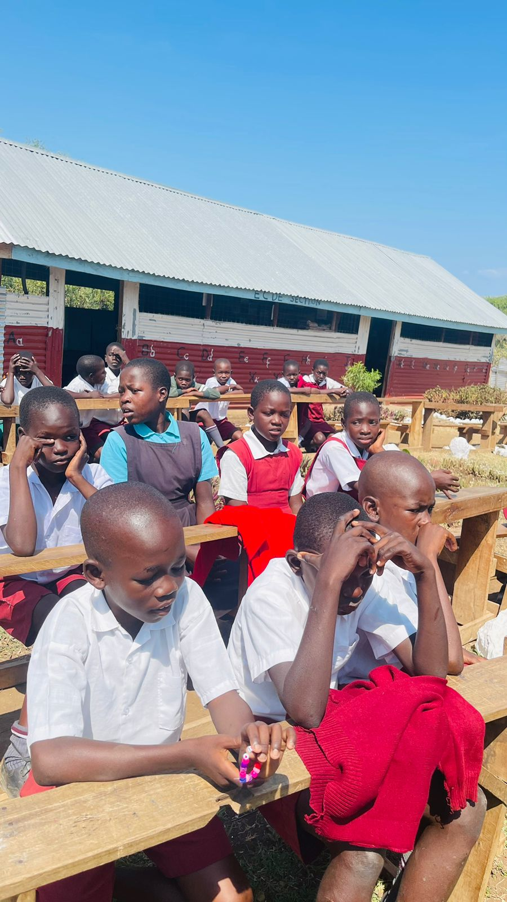
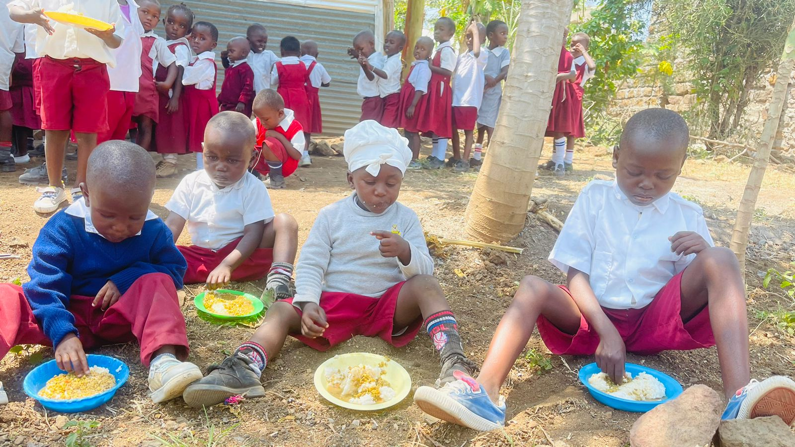
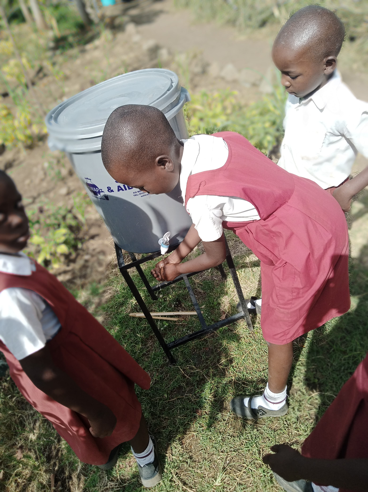
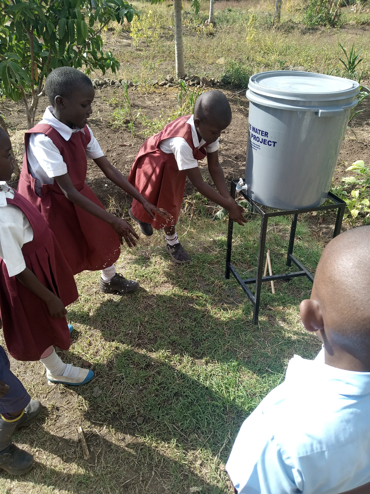

Our Services
A child in our school always needs food, clean water, and emergency medical care and our work ensures their needs are met.
Sustainability and transparency are our top priorities.
We want our friends, sponsors, and donors to know exactly where their contributions go by sharing photos, videos, and volunteering opportunities.
Donations create an amazing change and make a lasting difference.
EDUCATION

In Kenya, children pay fees to learn, and although the government has tried making an impact, there is still an enormous gap to be filled.
We offer free education for our students from kindergarten to grade six.
The donations we receive help with learning materials such as books, pens, computers, uniforms, and sanitary towels for adolescent girls.
N/B: We always rely on friends, sponsors, and donors to help sustain our children in school.
MEALS

Many children who attend the school have no access to food once they leave our care, meaning we are their only source of sustenance.
With us, they have morning porridge, lunch, and supper for children living in the orphanage.
CLEAN WATER

In Rusinga Island, the majority of people use water from Lake Victoria, which is contaminated and causes many illnesses in the community.
In our school, children have access to clean water, which also aids in sanitation and cleanliness to help stop the spread of diseases.
In the future, we want to ensure that the whole community has access to clean water.
HEALTH

Children in Rusinga Island tragically lack access to medical care when emergencies strike. Malaria and waterborne diseases such as typhoid, bilharzia, and cholera are a great challenge in our community.
N/B: Our plan is to build a community dispensary to support not only the students but also the community in general.
What We Have Achieved
The organization has achieved significant milestones with the help of our friends and donors, including building classrooms, dormitories, providing beds and bedding, and school materials.
We have also managed to build and fence our farm, where we grow fruit and vegetables and also have chickens providing eggs.
What We Have in Plan
1. We want to purchase a van or minibus for children who have to walk long distances to get to school.
This would help children arrive at school on time.
2. We also aim to install electricity in the school and the orphanage.